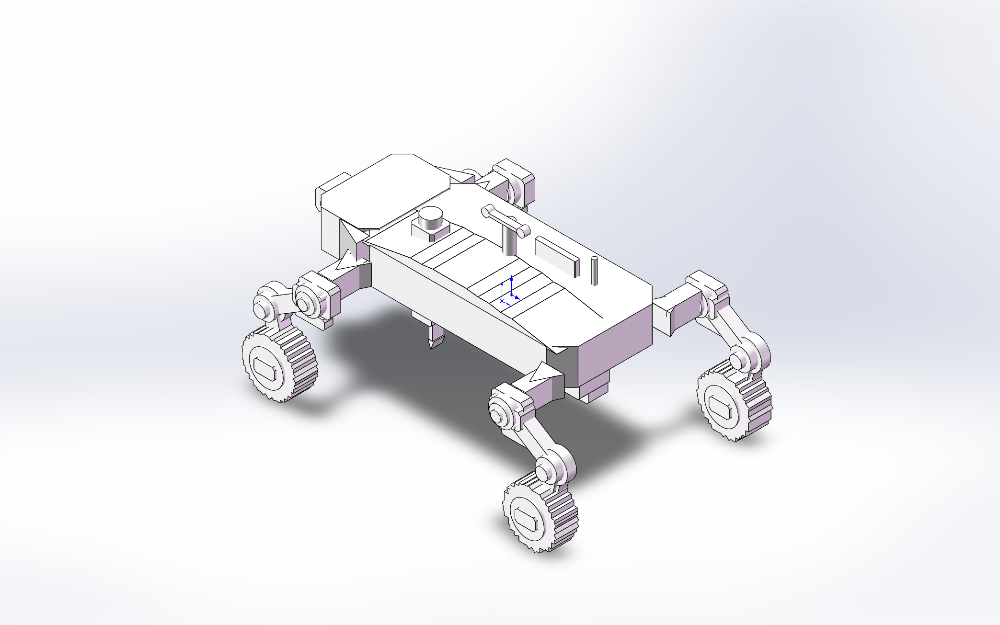
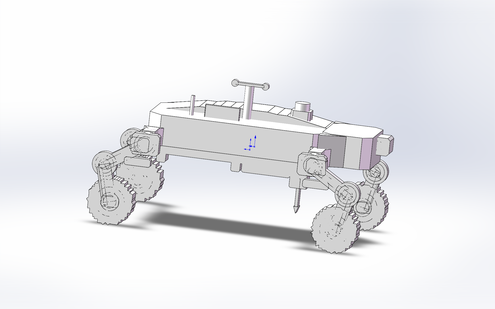
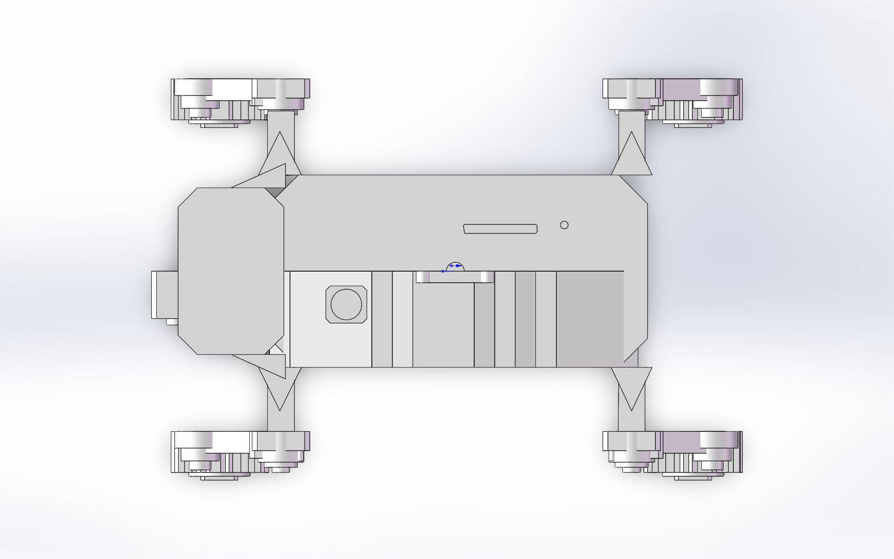
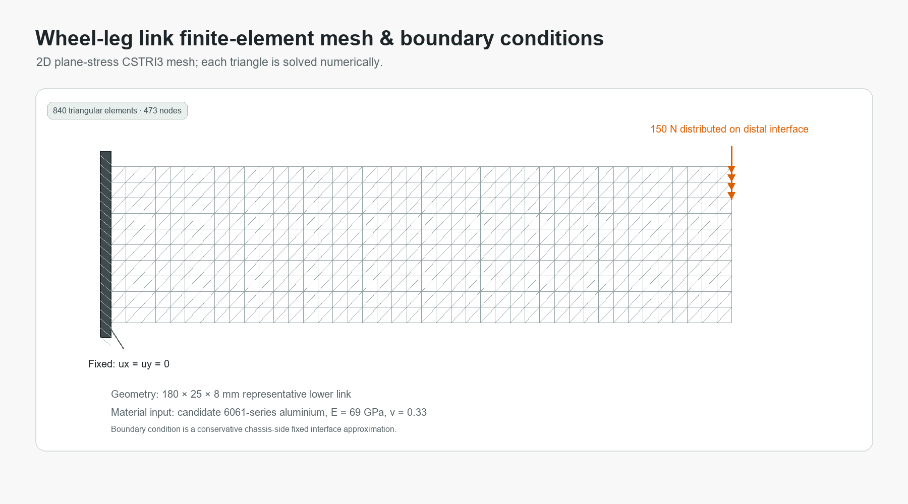
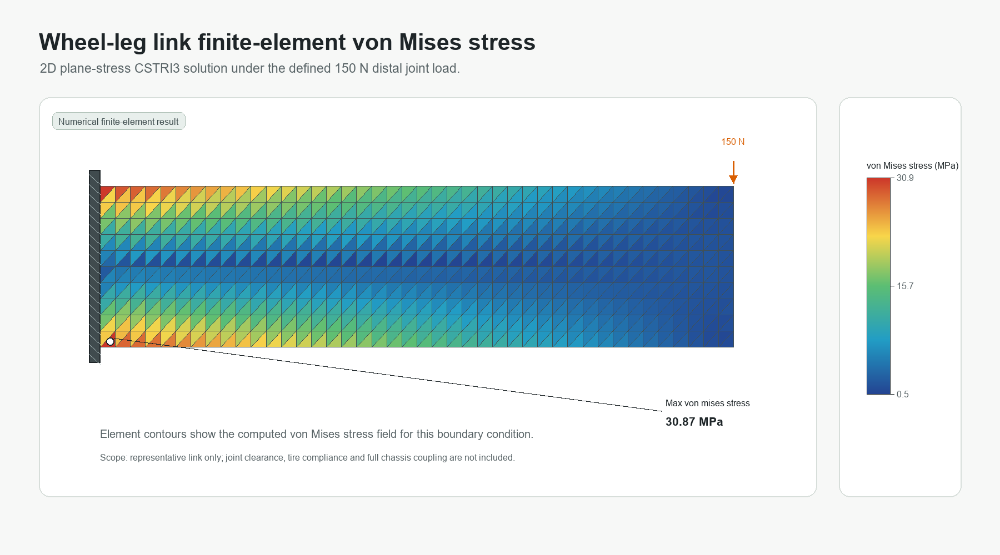
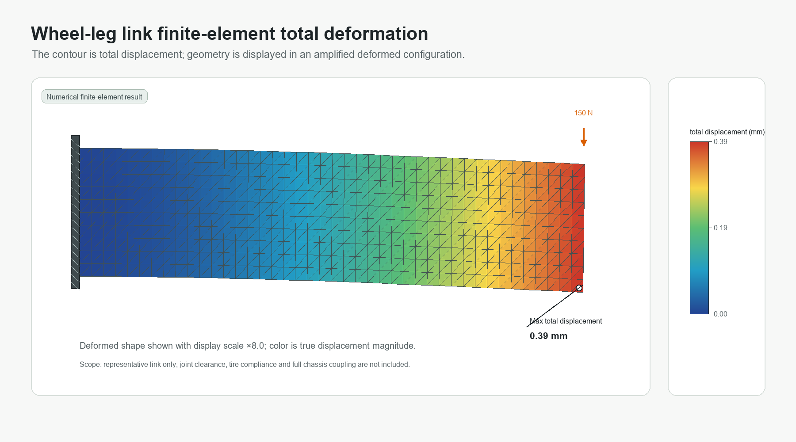

STRUCTURAL CONCEPT / FIELD SENSING PLATFORM
森林野外数据采集小车
面向林区样地环境数据采集与火险监测场景的轮腿式移动平台概念设计，并补充轮腿连杆局部有限元静力分析。

01 / DESIGN BRIEF
项目定位
以轮腿式越障底盘为核心，概念性承载相机、定位模块、环境传感器与近地面探针，为森林样地巡测提供可解释的机械平台方案。
- 移动机构
- 四轮 + 两段式轮腿连杆
- 核心载荷
- 环境传感、视觉采集、定位与探针模块
- 设计重点
- 结构层级、可维护性、野外通过性与展示表达
02 / CAD MODEL
结构模型与功能模块
车体、四轮轮腿机构、关节连接件、顶部环境传感单元与底部近地探针共同构成轻量化野外采集平台。


03 / LOCAL FEA
轮腿下连杆有限元静力分析
针对轮腿机构中的代表性下连杆建立二维平面应力有限元模型，求解固定关节端与轮侧载荷工况下的位移和 von Mises 应力分布。
模型范围：180 × 25 × 8 mm 代表性下连杆，候选 6061 系铝合金，二维平面应力 CSTRI3 单元；车体侧关节端固定，轮侧关节界面施加总计 150 N 向下载荷。该结果为局部构件有限元验证，整车接触、轮胎柔顺性和关节间隙将在后续完整装配体模型中补充。
设计载荷150 N轮侧界面分布向下载荷
最大 von Mises 应力30.87 MPa有限元单元应力场最大值
最大总位移0.390 mm轮侧载荷端附近
有限元网格840 / 473CSTRI3 三角形单元 / 节点

840 个 CSTRI3 平面应力三角形单元；车体侧固定、轮侧加载。

应力集中于车体侧固定关节根部，颜色由单元数值结果映射。

变形构型按显示倍率放大；颜色保持真实计算位移大小。
有限元输入
- 代表性下连杆：180 × 25 × 8 mm
- 候选材料：6061 系铝合金，E = 69 GPa，ν = 0.33
- 载荷：轮侧关节界面总计 150 N 向下分布力
- 约束：车体侧关节安装端面内位移固定
结果解读
- 最大应力位于车体侧固定端，符合悬臂式轮腿连杆受弯规律
- 位移峰值位于轮侧载荷端，计算值为 0.390 mm
- 当前用于局部构件校核，已具备有限元网格、应力与位移结果
- 下一步应以完整装配体补充销轴接触、轮胎、车体和传感器质量
04 / PROJECT FILES